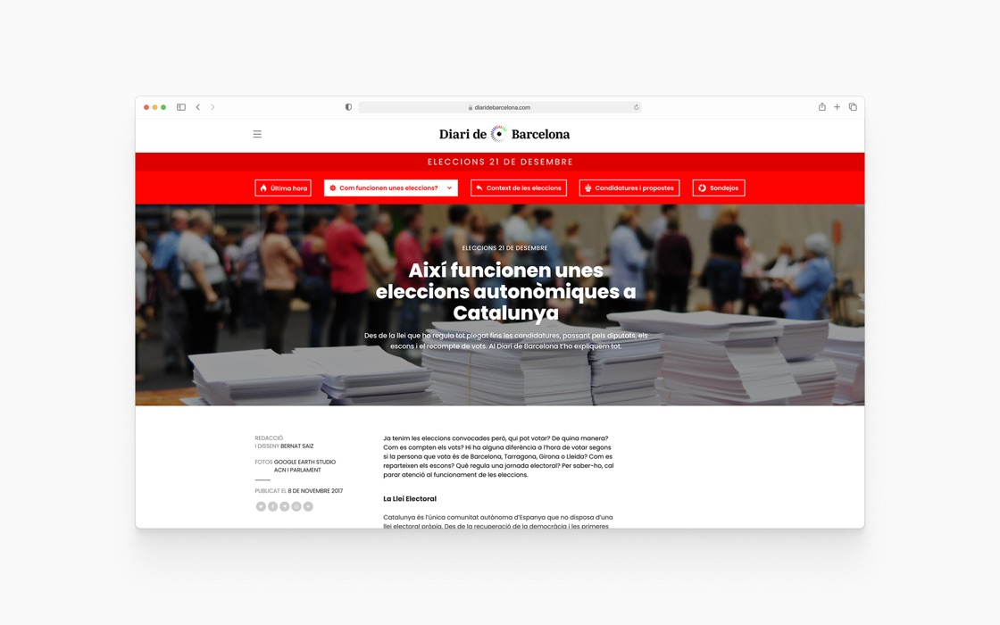
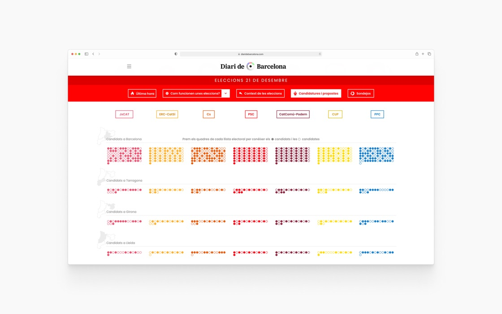
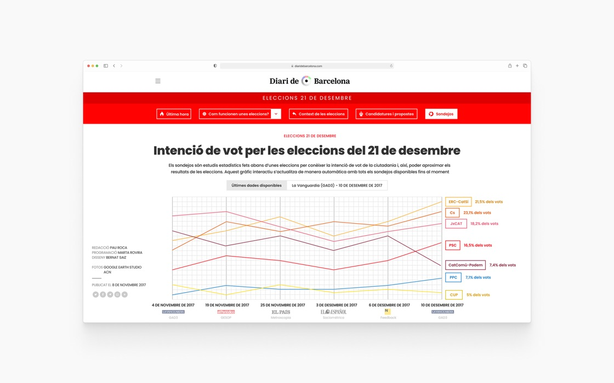
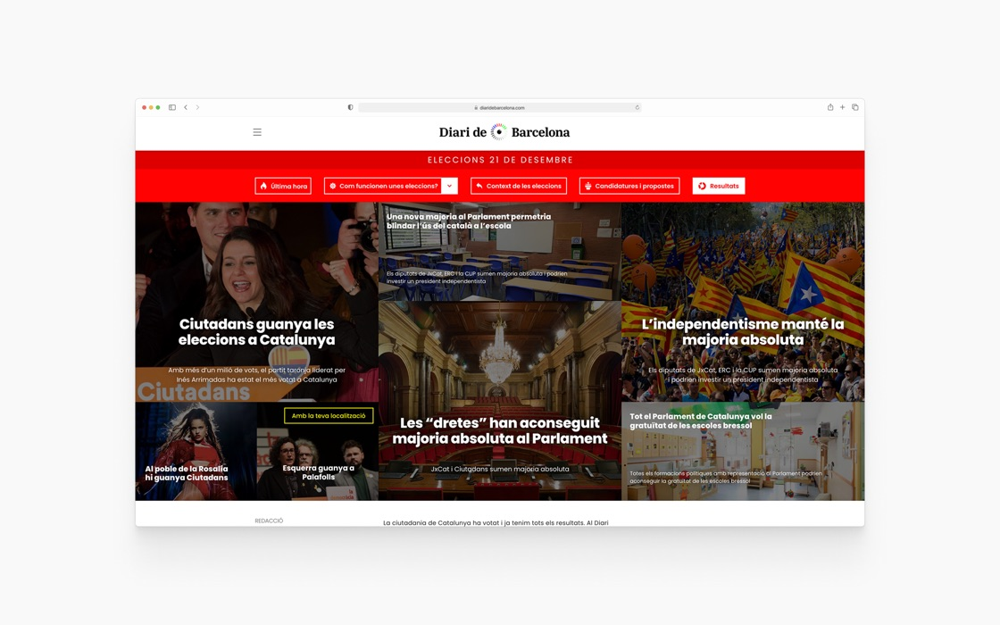

Digital news design for election results coverage
Conceptualized and designed a proposal for the Diari de Barcelona election coverage tailored to Gen-Z
- Date
- 2020
- For
- Diari de Barcelona (thesis project)
- Role
- UX/UI, web design, information design, writing
- Tools
- Adobe XD

"How do elections work" explainer article and page
The proposal is based on a horizontal navigation bar with five buttons that the user can use to understand the whole electoral process
Context
The Diari de Barcelona was founded in 1792 in Barcelona and was closed in 2009. In 2019 the City Council owned the rights to the name and transferred them to Universitat Pompeu Fabra. In 2020, it was reborn as a student-led digital-only newspaper. As part of this initiative, I dedicated my Advertising and Public Relations thesis to the development of a design proposal for the newspaper's election coverage. The project was tailored to Gen-Z, who were starting to get involved in elections at the time.
Role
Based on consumer research, current trends and interviews with experts, I created a design and interaction proposal that would seamlessly integrate into the Diari de Barcelona's new visual image and website. The project was designed with Adobe XD and delivered as a high-fidelity interactive prototype.

Candidates and proposals
On this page, users can compare the political parties' lists and their electoral programs

Surveys
A poll survey graph is offered to compare possible election results during the campaign

On election day, with available results, the "Survey" page turns into "Results", featuring a grid of articles
The articles are shown based on journalistic principles, but also taking into account other perspectives that might be of interest to Gen-Z, and tailored content based on the user's location.